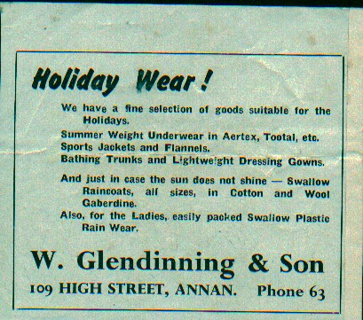

The Family Chronicle
No.24 March 30, 2002
_

In 1956 I visited James Glendenning in Annan, Scotland, the place from which our Great Grandfather sailed. In fact, I stayed a couple of nights with two of his maiden aunts. James operated a men’s clothing store; he has since died and the store is operated by his son, Walter.
Recently I read a book, The Fatal Shore, by Robert Hughes, about the history of Australia. In it, he quotes Thomas Watling, from Dumfries, Scotland, who was transported to Scotland for forging notes on the Bank of Scotland; Watling was a landscape painter who arrived in Australia in 1792. Watling is quoted a number of times on the barrenness of the country and the conditions in which people lived. An internet source speaks of the “Watling Collection” of several hundred oil paintings in the British Museum in London. James Watling was born in Dumfries, Scotland in 1762, the son of Ham Watlin.
In a legal document dated November 13, 1901, Uncle Jim’s full name was given as James Alexander William Watling.
Our Grandfather, Jubal Watling, lived at the Meadows; he married Grace MacDonald who lived at Little Branch – where Neil Watling now lives. Grandmother’s father, John, died in 1900, I think, and her mother, Elspeth, was not well. In addition, James, Grandmother’s brother had inherited the farm when his father died, was not married, was living at home but was not able to operate the farm. As best I can interpret, the land did not include the Jessie McDonald property where Norman Glendenning now lives.
On November 13, 1901, James entered into an agreement with his sister, Grace and her husband, Jubal. As parties to the agreement also were Jubal and Grace’s four sons, George, John, James and Ernest. A copy of this agreement can be found in the Northumberland County Registrar’s office.
All the land and buildings are to be turned over to the Watlings. In return, the Watlings will “keep support, maintain and provide the said James J. McDonald and his mother, Mrs. John D. McDonald, each of them and the survivor of them during the respective terms of their natural lives with good and sufficient house, room, meat, drink, washing, clothing, bedding, fire, light, medicine, medical attendance, personal expenses and all such necessaries as persons of their ages and conditions in life usually require and are accustomed to.” The Watlings were also to provide a “decent Christian burial” paying all funeral expenses.
Elspeth (Jardine) MacDonald died September 12, 1907 and James died April 1, 1923.
Donald Edge was trying to recall the name of a game played by youngsters in Black River. It was, I believe, Anti-I-Over although I am not sure of the correct spelling.
It was played between two teams separated by a building – usually the house, the barn or a large shed. One team would throw the ball over the building – anywhere along the roof. The other team would wait for the ball to appear and would try to catch it. If not successful, they threw the ball back over. If successful in catching the ball, team members would run around the building and attempt to catch (hit the other team with the ball. If they did, they won.
This is my recollection of the rules of the game but I would welcome comments.
Bob MacLean Property
It appears that the Bob MacLean property was part of an original grant, Lot #6, to John MacLeod. On August 30, 1931, Bob mortgaged the property to Peter and Bessie Moody. A sister? Aunt? On August 27, 1931 he paid off the mortgage.
On the same day, Bob transferred the property to Elmer Glendenning. Part of the deal was that Bob could continue to live on the property, to harvest the crop of oats then ripening and to remove a barbed wire fence around the oat field. Provision is also made for a right of way to the Dan MacLean property, where Walter lived prior to moving to Moncton.
The Bob MacLean property passed, on Dad’s death, to Mum and from Mum to John on September 22, 1947
There is some confusion in my mind about the Watling grants at the Meadows. On April 9, 1851, Jubal Watling petitioned for a lot on the south side of Black River. A note on the side of the petition appears to show that it was approved on May 21, 1851. A later not shows “Auction” dated August, 1851
Other information suggests that Jubal Watling was granted 100 acres, Lot #30 in 1881. This matter requires some more investigation.
Queen Mother
The death of the Queen Mother brought to mind the visit of the King and Queen to Newcastle in 1938. The King and Queen came by train to Newcastle then went by car to Fredericton.
A number of us from the Little Branch, maybe 15 or so?, went to Newcastle in the back of a big (3 ton) open truck. It seems to me that the truck belonged Harry or “Hassie” Smith. We were picked up very early in the morning and returned home fairly late in the evening although not after dark. I think that we stood all the way; there were no benches to sit on. It was a beautiful sunny day; I am not sure what we would have done had it rained.
Chronicle is an occasional newsletter published by Don Glendenning It is intended to solicit and provide information about family tree matters. Comments, enquiries and information may be sent to 62 Queen Elizabeth Drive, Charlottetown, PEI, C1A 3A9. Tel: 902 892 5859 Email: glenden@attglobal. net. Feel free to make and pass along copies of this newsletter